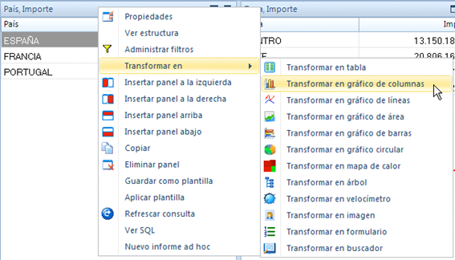

La manera más sencilla de crear un gráfico, es crear una tabla con los datos que se quieren representar, y posteriormente transformar esta tabla en un gráfico.
La opción de “Transformar en gráfico” aparece en el menú contextual del panel. Sencillamente, se tiene que elegir la opción que más convenga:

Una vez el gráfico está creado, podemos ajustar cambiar su apariencia ajustando sus propiedades.